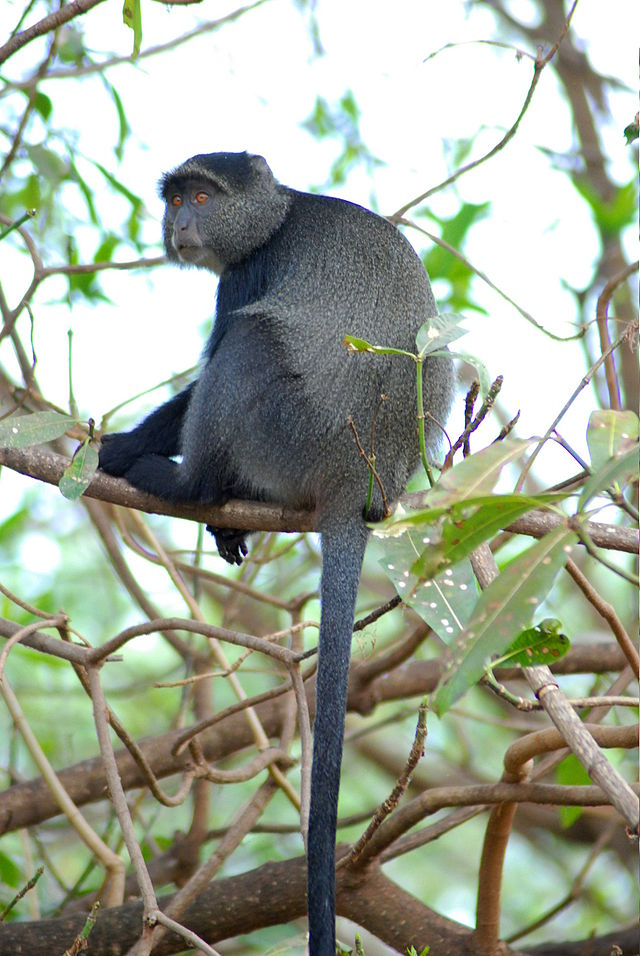

Stefani's Monkey Website
Created by Tydin
Blue monkey also known by its other name the “Diademed Monkey”. They get this name from the whitish or yellowish fun on the forehead. The name “Blue Monkey” was given from the lack of fur on the face giving the skin a blue hue. These monkeys weigh in at about 9-18 lbs. Blue monkeys are covered with an olive, grey or brown fur coloring. Their head, legs and feet are dark brown or black in color. Blue monkey is adapted to the life in the treetops. It rarely descends to the ground. Blue monkeys live in large groups composed of 10 to 40 members. Blue monkeys occasionally gather with other species of monkeys (such as red colobus and red-tailed monkeys) and form "alliances" to reduce risk of predation. Blue monkeys can survive 20 years in the wild and more than 30 years in the captivity. Blue monkeys are omnivores. Its diet is based on fruit (especially figs), leaves, insects and small invertebrates. When the food is scarce, blue monkey strips and eats bark of evergreen it’s. Main predators of blue monkeys are snakes, birds of prey and leopards.
Blue Monkey
 Read More